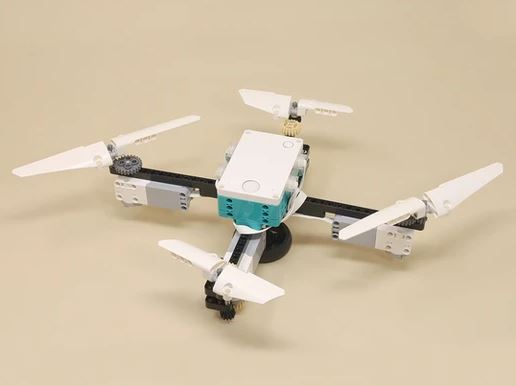

Building Instructions

Quadcopter | |
|---|---|
|  |
Does it fly? Sorry, no, not even close. It doesn't even generate any measurable thrust... So you will have to use your imagination for that part. But the two programs provided control the four rotors independently and show two basic strategies that real quadcopters use: translating remote control inputs to rotor speeds to control thrust and steering, and automatic self-levelling flight using a gyro sensor.
Although you can't see any thrust effects, you can notice slight twisting motions when running the quadcopter balanced on the stand. This is due to the reaction effects of the changing rotor speeds, which is something that real quadcopters need to deal with (or can use to their advantage in some cases). For a project that explores this effect in a very noticable way, see the Reaction Wheel. |
Building Instructions |
|
|---|---|
| Quadcopter |
Programming |
|
|---|---|
 | Quadcopter Programming.zip |
 | 1 Quadcopter RC.lms |
| 2 Quadcopter Gyro.lms |
 |
Quadcopter RC
This remote control program uses the slider to control the overall vertical thrust power and then adds input from the joystick to modify the four motor speeds to simulate the tilting necessary to move horizontally. You can balance the quadcopter on the stand when running this program. |
 |
Quadcopter Gyro
This program uses the hub's gyro sensor to modify the four motor speeds to simulate corrections needed to keep the quadcopter flying level. All four rotors run at about 50% speed when the quadcopter is level, and a pair of opposing motors is sped up on one side and slowed down on the other when the hub is tilted along that axis. You can (carefully) hold the quadcopter in your hand from below when running this program so you can tilt it. |